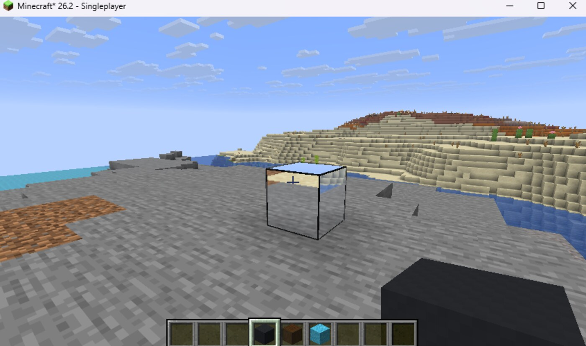
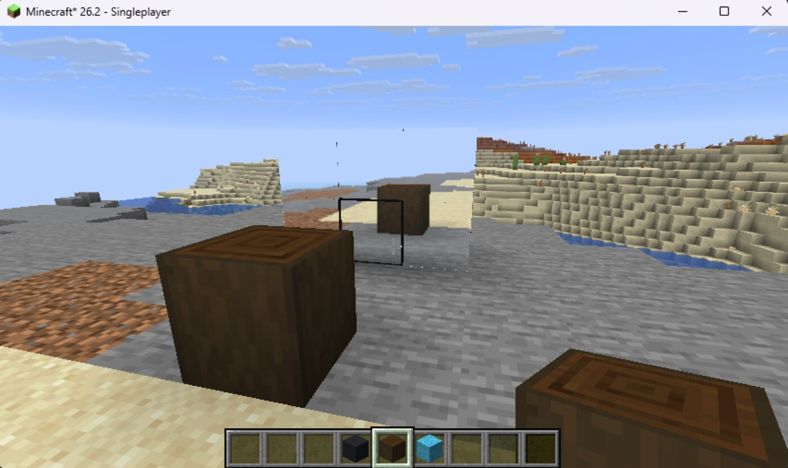

A mirror that actually reflects.
A borderless, six-sided mirror block that renders the world a second time from a mirrored camera. Real parallax, real geometry, real mirror-in-mirror recursion — everything except you.
Not a texture. A second render of your world.
A flat mirror is optically identical to a window into a mirrored copy of the room. So instead of faking a highlight, the mod moves the camera to the reflected position and draws the world again.
The camera is mirrored across the plane
Every mirror surface is a plane: a centre point and a normal. The eye position is reflected across it, the view direction is reflected the same way, and the result is a camera whose view is the reflection — no approximation involved.
Because the reflection comes from a real camera, it has real parallax. Step sideways and the reflected scene shifts exactly as it should. Grazing angles stay correct, which is where screen-space tricks fall apart.
Geometry behind the glass is removed by skewing the near clip plane onto the mirror surface, so the GPU clips it for free.
Mirrors can see mirrors, so recursion is bounded
Two mirrors facing each other are mathematically an infinite series. The mod bounds it with four independent limits: how many surfaces are drawn, how deep the chain goes, how many children each reflection may spawn, and an absolute per-frame ceiling.
The branching factor is the dangerous one — it grows exponentially. Depth is comparatively cheap. That separation is why there are four dials instead of one quality slider.
Every dial lives in config/mirror.json and takes effect on restart.
What you get.
Six reflective faces
No frame, no trim, no front. Every side of the cube is a full mirror surface with its own reflected camera.
True planar reflections
Geometrically exact with real parallax. Terrain, mobs, other players and the sky all appear correctly.
Recursive mirror-in-mirror
Place two cubes facing each other and the reflection nests up to your configured depth.
You are not in it
The reflection uses your own camera, which never draws your body. The world reflects; you do not.
Sodium compatible
The mod redirects Sodium's terrain projection during the pass and restores it afterwards.
Seven performance dials
Resolution, depth, branching, pass ceiling, reach and fog — all in one small JSON file.
In-game settings
Optional Mod Menu and Cloth Config integration. The JSON file alone is enough.
Free and open
MIT reflection engine, free distribution, no paywall, no premium tier. Selling it is not permitted.
Captured in a live world.
Real screenshots at default settings — no post-processing, no shader pack.

Expand
ExpandEvery build, always the latest.
Read live from the GitHub Releases API. Publishing a release is the only step needed for it to appear here — the site never needs an edit.
versions.json,
tag the commit and publish the release. The permanent
/releases/latest link always resolves to the newest stable build, so shared links never go stale.
Read this first: the mod is performance-heavy.
Real reflections mean the game re-renders parts of the scene for every mirror face on screen, on top of everything it already draws. Depending on hardware and settings this can noticeably cut your framerate — especially with several cubes visible at once or a high recursion depth.
You are fully in control. Every performance-relevant value lives in config/mirror.json.
Turn them down for smooth gameplay on a weaker machine, or push them up if your hardware can take
deeper, sharper reflections.
Seven dials in config/mirror.json
Lower values mean better performance. Higher values mean richer reflections and more GPU and CPU load.
{
"maxReflections": 10,
"recursionDepth": 4,
"nestedPerParent": 2,
"maxRenderPasses": 48,
"reflectionDistanceChunks": 10,
"fogStartBlocks": 100,
"resolutionScale": 0.7
}
Reflection buffer resolution relative to your screen. 1.0 is full quality. This is the only value that scales quadratically.
How many child reflections one reflection may spawn. The branching factor of the reflection tree.
How many times a mirror may reflect into another mirror. Higher gets closer to a true infinite mirror.
Maximum number of mirror surfaces rendered in one frame.
Absolute ceiling on reflection passes per frame, regardless of the other values.
How far, in chunks, the reflected view reaches into the world.
Distance at which fog fades the reflection out, hiding far-away render cost.
Installed in five steps.
Standard Fabric workflow — no launcher plugins, no extra tooling.
mods folder.mirror-…jar and rageforge-…jar into mods. Both are required.config/mirror.json into your config folder before first launch.Works with Sodium. Not with Iris.
Supported. During a reflection pass the mod points Sodium's terrain projection at the mirror's oblique projection, so Sodium draws the reflected view instead of the scene behind the mirror — then restores it.
Declared as breaks in the mod metadata. Iris replaces the render pipeline that the reflection pass re-enters, so mirrors have nothing to draw into.
Standing on good work.
Put a mirror in your world.
Download, drop into mods, and start reflecting.